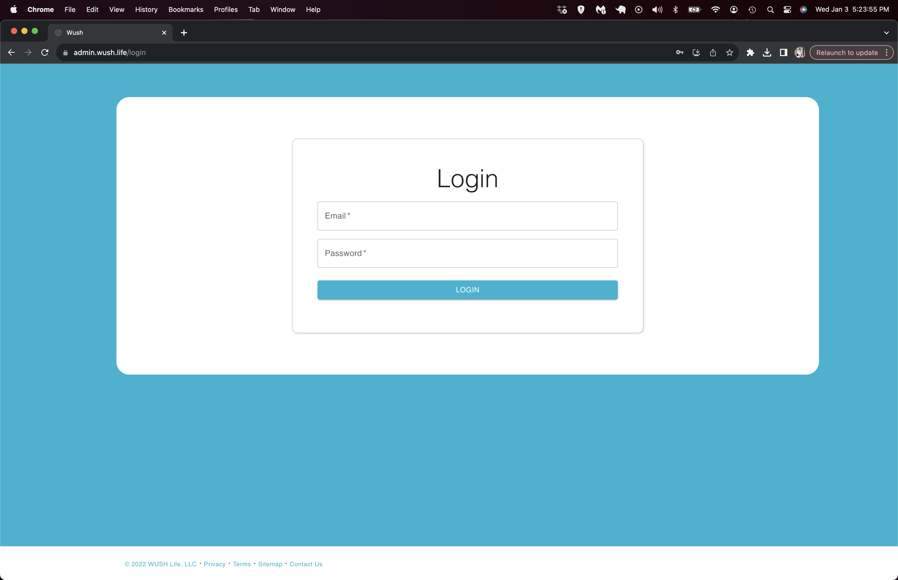
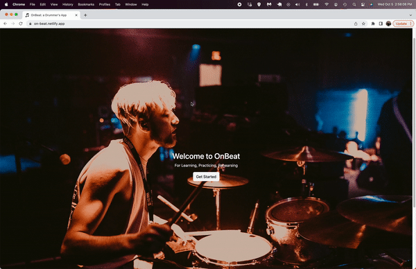
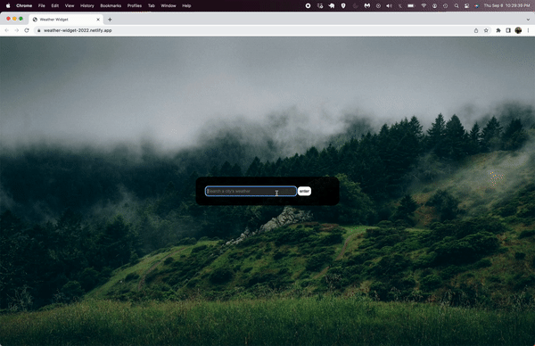

Here are a few projects I've worked on
Houston Christmas Lights

Engineered a custom full-stack application using React and Ruby on Rails to automate time-consuming manual quoting processes for a Christmas lighting business, reducing quoting time by 50% and seamlessly integrating data into a custom CRM.
WUSH Inventory App
Revitalized client operations by spearheading the implementation of a streamlined inventory tracking system, delivery management, and event creation enhancement. Successfully integrated and tested new beta features, resulting in a substantial reduction in daily workload.
Prosper AI Product Page

TDuring my internship at Prosper AI, my primary focus was developing their upcoming mobile app. As a concluding task, I designed a product page for their public website, utilizing Next.JS, TypeScript, and TailwindCSS for the development.
The 1975 Mock Website

I developed this static site using server-side rendering with EJS (Embedded JavaScript). Given that The 1975 is one of my favorite bands, I took inspiration from their website. It sparked an idea: "Why not recreate their site, adding my personal touch and flair to it?"
OnBeat: A Drummer's App
I developed this static site using server-side rendering with EJS (Embedded JavaScript). Given that The 1975 is one of my favorite bands, I took inspiration from their website. It sparked an idea: "Why not recreate their site, adding my personal touch and flair to it?"
Weather Widget
This is a simple weather app to display weather data based on a search location. It renders HTML elements using DOM manipulation and pulls data from a weather API. Type in a city name and hit the enter button. The app works by either city or state name.